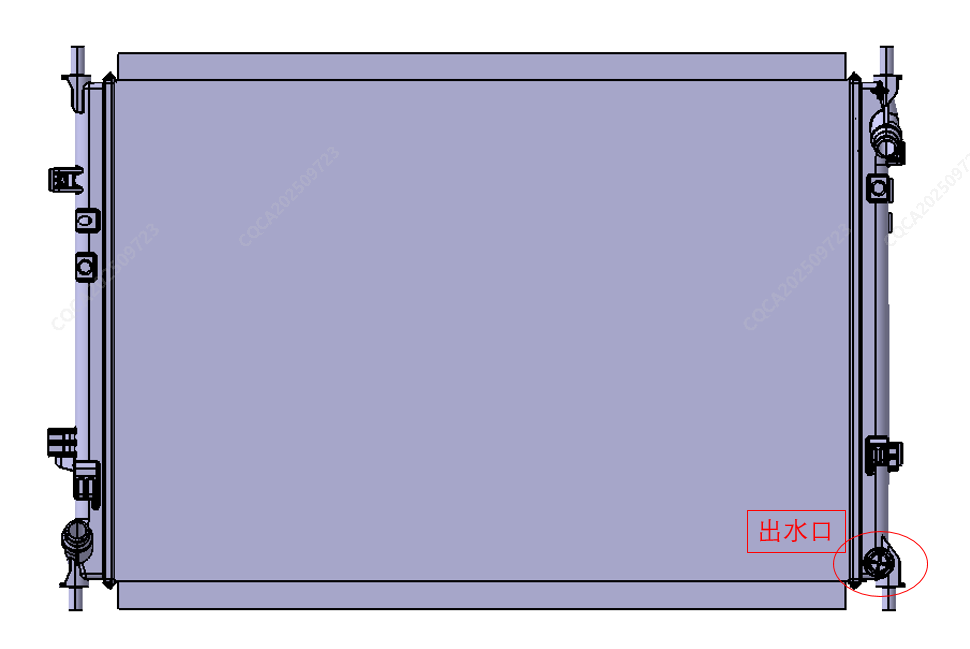

在维修冷却系统相关零部件时需要先放出冷却液，排放冷却液时务必使系统排放完全，避免拆卸时飞溅到其它零部件上。
冷却液排放点如下图：
冷却回路蓄水瓶盖打开：开启后便于系统冷却液排出；
散热器出水口位置：放冷却回路冷却液；

打开蓄水瓶盖，向加注口内缓慢加入冷却液至MAX线；
大屏点击进入空调控制界面，5秒内连续检测到如下按键循环触发，则进入加注模式；出风模式-出风模式-内外循环-内外循环-出风模式-出风模式；
低配车型:2.75±0.2L
高配车型:7.5±0.2L
冷却液加注应使用抽真空设备加注。如因条件限制，可以使用人工向冷却液壶中加注冷却液。加注完成后应按如下步骤排出回路中的气体；
冷却液加注到水壶MAX线；
在大屏空调设置界面进入加注模式（参照冷却液加注）后，进行以下操作，5秒内连续检测到如下按键循环触发，则进入排气模式；内外循环-出风模式-内外循环-出风模式-内外循环-出风模式进入排气模式（至少持续30min）；
水泵转动的同时补充冷却液，待液面停止不再下降可停止水泵工作，关闭加注模式；
补充冷却液使液面至MAX线±5mm之间，排气完成，拧紧蓄水瓶盖，再次观察液面，若液面稳定，则加注完毕。